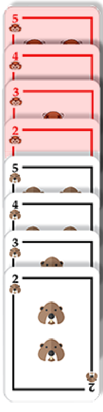
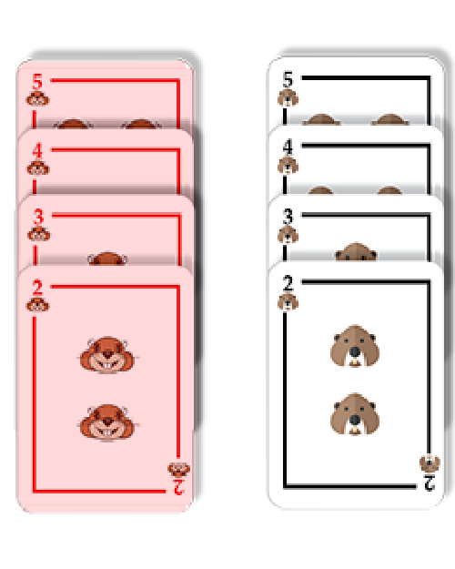
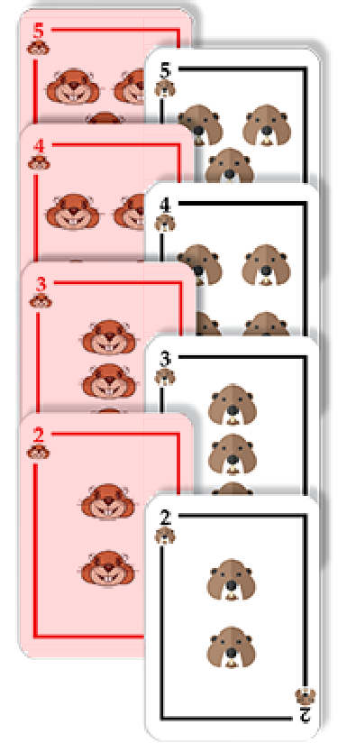
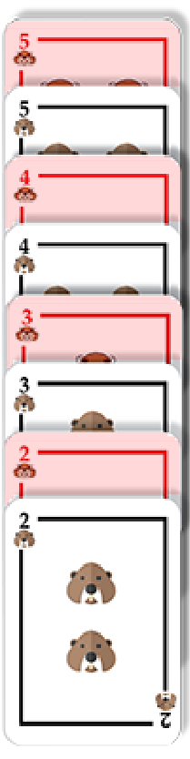

完美洗牌
法拉有一副海狸牌共八張，一開始法拉先將海狸牌由大到小排列後，再依照顏色分類(如下圖的起始狀態)。
接著法拉正在練習一種特殊的洗牌方式稱之為完美洗牌。執行完美洗牌時，一開始法拉要先將海狸牌依照顏色分類後，將卡片從上到下按照由大到小排列（如下圖的起始狀態），接下來重覆下圖的兩個步驟：
|  |  |  |  |
|
起始狀態 |
步驟一
在不改變牌的順序下，將牌等分成兩份。上面四張牌為第一組，下面四張牌為第二組 |
步驟二
將第一組在上、第二組在下的方式，將牌交錯混合 |
最終結果 |
經過幾輪的洗牌，法拉發現牌竟然回到一開始的順序了，請問從一開始起始狀態算起，法拉總共洗了幾次牌？